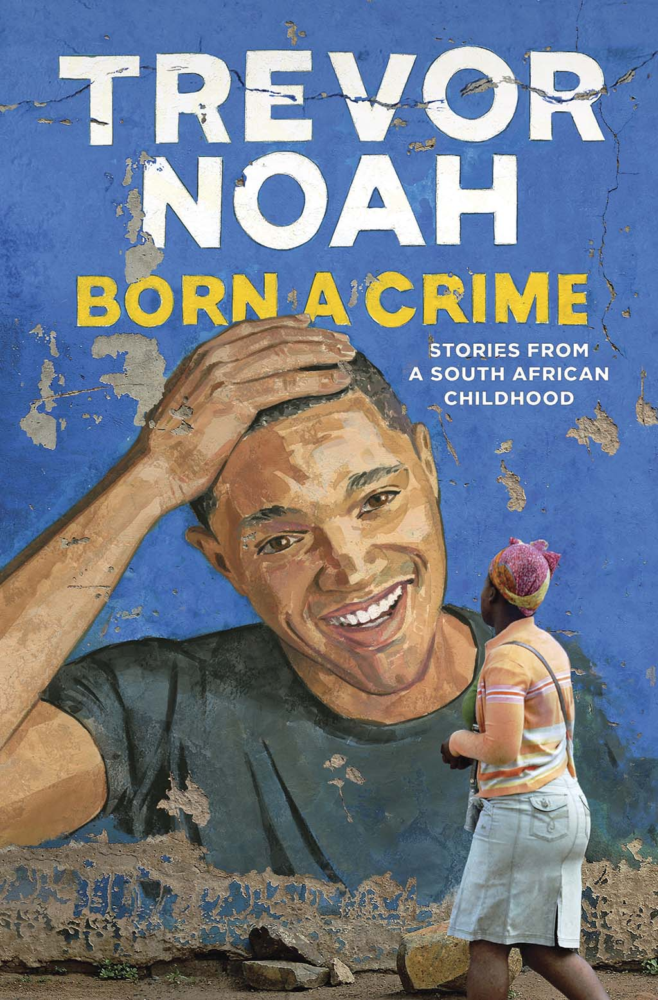

Born a crime by Trevor Noah- Summary(Chapter 1 and 2)
Trevor Noah the author of Born a Crime tells stories of his childhood during apartheid.
His mother was a devoted christian who took them to three churches every
sunday.
Trevor enjoyed attending church. One Sunday his mother threw him out of a car.
Trevor asked his mother if God would be meeting them at home instead of
them going to church.
Sexual relationships between races were against the law . It was illegal for black people to live
within the city but Trevor's mother ran away from
home to live and work in Johannesburg.
She became friends with a Swiss man who had an apartment in the city.His mother got a child
with the swiss man, and this was
Trevor who is a mixed race child. Trevor’s existence indicated
criminal behaviors. His mother’s rebellious approach to life is evident in her decision to have
a child of mixed
race.
One of the themes displayed by Trevor in this book is racism in SouthAfrica which also exists
in Kajiado County
treatment within the society is based on peoples races.
Family dynamics and cultural heritage explored in these chapters reflect the importance of
community and tradition in Kajiado county ,
where cultural values and ancestral customs play
a significant role in people’s lives.
People in Kajiado like Noah and his mother use humor to cope with life challanges.
Kajiado is composed of
ethnic groups and this relates to Noah's struggle with identity and belonging in a racial society.
Kajiado county's diverse population's challanges
and poverty can resonate with Noah's experience under apartheid.